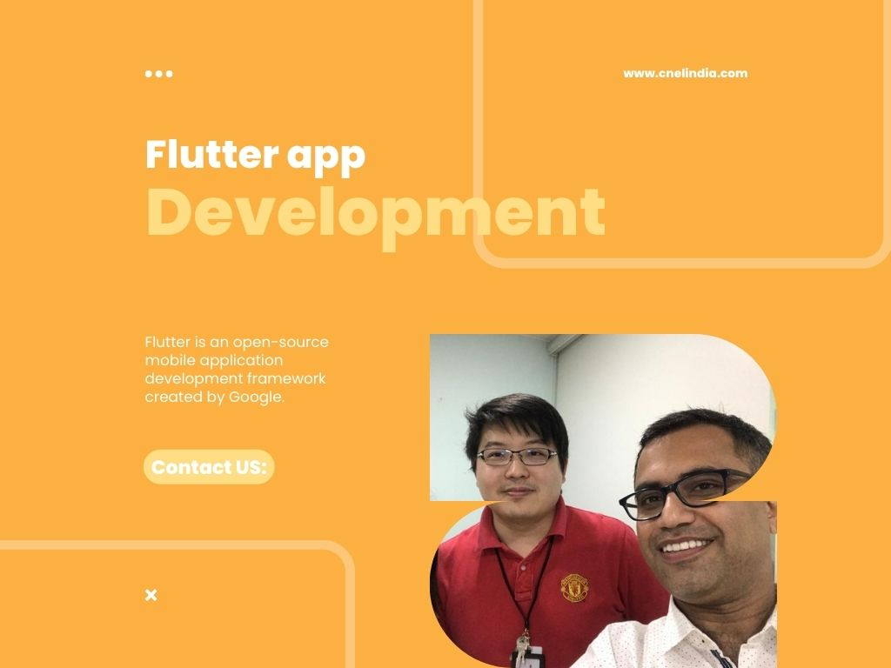

How does CnEL help you with Flutter Mobile Development?
Flutter app development typically involves creating a new project, designing the user interface using widgets, writing the logic for the app using Dart, and testing and deploying the app to the app store.
One of the key features of Flutter is its "hot reload" function, which allows developers to see the changes they made in the code instantly in the app without having to manually rebuild the app each time. This feature allows for faster development and iteration.
Flutter also provides a rich set of customizable widgets that can be used to create beautiful and responsive user interfaces. The framework also supports integration with other technologies and platforms, such as Firebase and GraphQL.
Flutter app development is a relatively new technology, but it has gained popularity among developers due to its fast development speed, customizable widgets, and the ability to deploy to multiple platforms. It's a suitable framework for small and medium-sized businesses to develop their mobile apps, which can help them increase the reach of their business, generate new revenue streams, and improve their customer engagement.
Why do you need Flutter App Development services.
There are several reasons why an organization may need Flutter app development services:
1.Cross-platform Development: Flutter allows developers to create apps for both Android and iOS platforms using the same codebase, which can save time and resources.
2.Faster Development: The "hot reload" feature of Flutter allows developers to see the changes they made in the code instantly in the app without having to manually rebuild the app each time. This feature allows for faster development and iteration.
3.Customizable Widgets: Flutter provides a rich set of customizable widgets that can be used to create beautiful and responsive user interfaces.
4.Integration with other technologies: Flutter allows for easy integration with other technologies and platforms, such as Firebase and GraphQL, making it a versatile framework for building apps.
5.Cost savings: Developing an app for both Android and iOS platforms using Flutter, saves the cost and resources required for developing two separate apps.
6.Technical Expertise: Flutter app development requires knowledge of the Dart programming language and the Flutter framework. By outsourcing Flutter app development, organizations can benefit from the expertise of experienced professionals.
7. Time-saving: Flutter app development services can save time and resources for an organization by allowing them to focus on their core operations while experts handle the development of the app.
In summary, Flutter App Development Services can help an organization save money and time, create high-quality cross-platform apps, reach a wider audience, innovate, generate new revenue streams, improve their customer engagement, and adapt to the market changes, which can all contribute to the growth of their business.
In summary, Android App Development Services can help an organization to reach a wide audience, innovate, generate new revenue streams, save money, ensure that their app is of high quality and can adapt to the market changes, all of which can contribute to the growth of their business.
How small business can grow by using Flutter App Development Services.
Flutter app development services can help small businesses grow in several ways:
1.Reach: Developing an app for both Android and iOS platforms using Flutter allows small businesses to reach a wider audience, potentially increasing their customer base and revenue.
2.Cross-Platform Development: Flutter allows for cross-platform development, which can save time and resources for small businesses, and enables them to reach a wider audience.
3.Revenue Generation: Developing an app for both Android and iOS platforms using Flutter can be a source of revenue for small businesses, allowing them to diversify their income streams and potentially increase their profits.
4.Faster Development: The "hot reload" feature of Flutter allows for faster development and iteration, which can save time and resources for small businesses.
5.Customizable Widgets: Flutter provides a rich set of customizable widgets that can be used to create beautiful and responsive user interfaces. This can help small businesses create an engaging user experience, which can improve customer loyalty and increase revenue.
6.Technical Expertise: Flutter app development requires knowledge of the Dart programming language and the Flutter framework. By outsourcing Flutter app development, small businesses can benefit from the expertise of experienced professionals and ensure that their app is of high quality.
7. Cost Savings: Developing an app for both Android and iOS platforms using Flutter, can save the cost and resources required for developing two separate apps.
In summary, Flutter App Development Services can help small businesses reach a wider audience, generate new revenue streams, save money, improve their customer engagement, and adapt to the market changes, which can all contribute to.